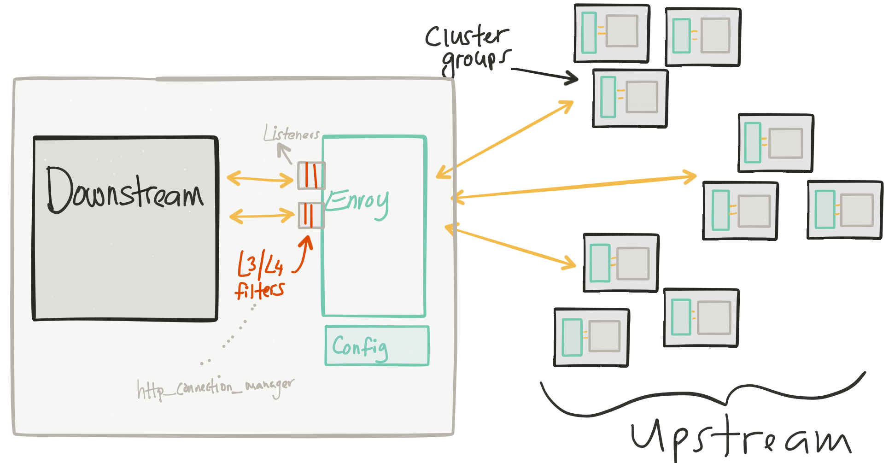
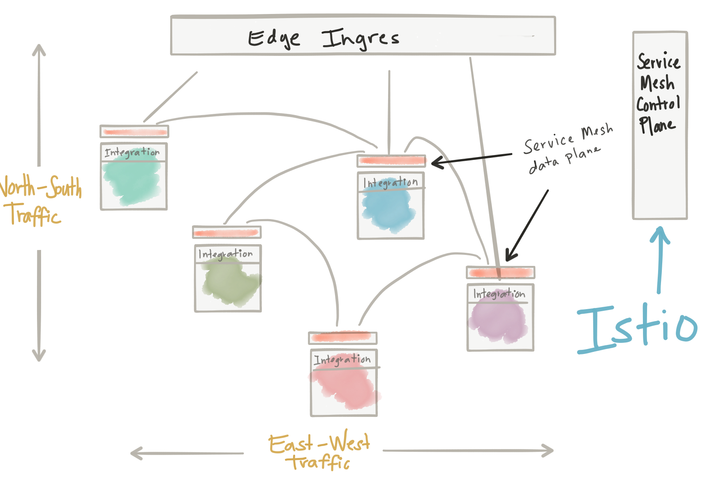
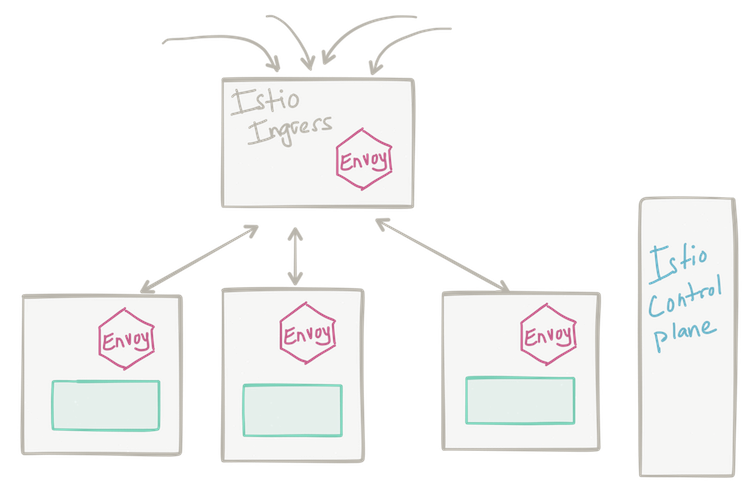
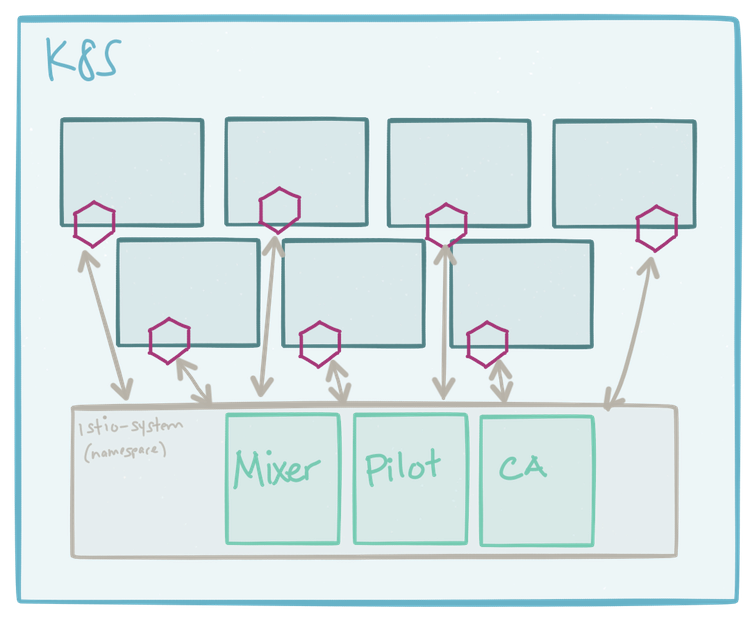
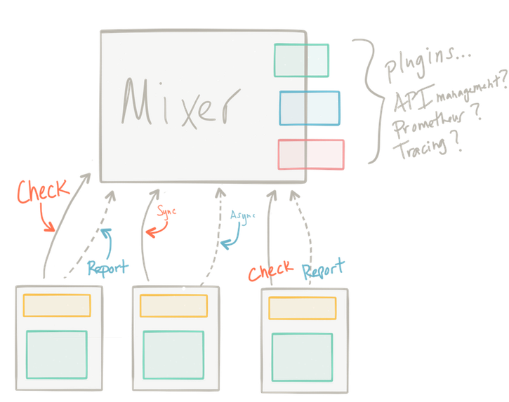
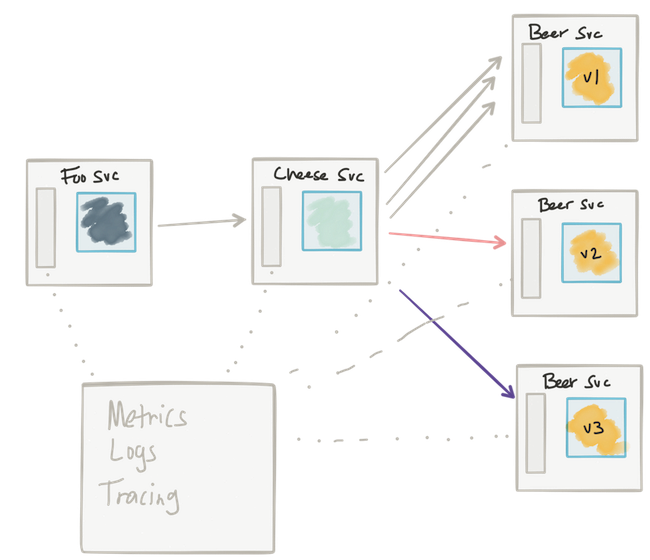
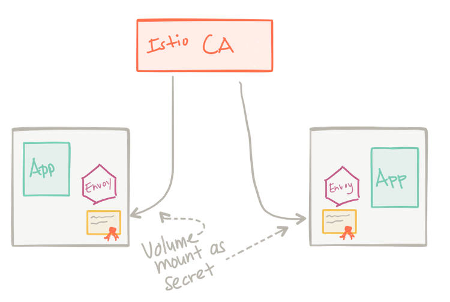

Microservice'ing like a unicorn
with Kubernetes, Envoy, and Istio
Created by @christianposta and contributors
Agenda
- How did we get here?
- Meet Envoy Proxy
- Hands on with Envoy Proxy
- Meet Istio Service Mesh
- Hands on with Istio Service Mesh
- Additional resources
Source Code Is Here
https://github.com/christian-posta/istio-workshopHow did we get here
so you want a services architecture...
"do one thing, do it well"
"pick right technology for the problem"
"individual deployment"
Kubernetes to the rescue!
Kubernetes is a deployment platform;
it does not adequately address service communication
the network is not reliable
fallacies of distributed computingcan kubernetes help?
- DNS based service discovery
- simple L3/4 load balancing
every application must account for
- unpredictable failure modes
- end-to-end application correctness
- system degradation
- topology changes
- elastic/ephemeral/transient resources
so we do things like...
- circuit breaking
- bulkheading
- timeouts
- retries
- service discovery
- client-side loadbalancing
actually, entire suites of frameworks were built to help developers address these resilience concerns
- Hystrix
- Zuul
- Ribbon
- Eureka
- Brave/Zipkin
- Spector/Atlas

but i'm using spring!
- spring-cloud-netflix-hystrix
- spring-cloud-netflix-zuul
- spring-cloud-netflix-eureka-client
- spring-cloud-netflix-ribbon
- spring-cloud-netflix-atlas
- spring-cloud-netflix-spectator
- spring-cloud-netflix-hystrix-stream
- ...
- @Enable....150MagicThings
but i'm using vert.x
- vertx-circuit-breaker
- vertx-service-discovery
- vertx-dropwizard-metrics
- vertx-zipkin
- ...
but i'm using...
- NodeJS
- Go
- Python
- Ruby
- Perl
- Get the point!?
so for every language/framework combination, you need...
- service discovery
- retries
- timeouts
- load balancing
- bulk heading
- circuit breaking
- rate limiting
so for every language/framework combination, you need...
- adaptive routing
- deadlines
- back pressure
- outlier detection
- health checking
- traffic shaping
- request shadowning
so for every language/framework combination, you need...
- edge/dmz routing
- surgical / fine / per-request routing
- A/B testing rollout
- dark launches
- fault injection
- stats, metric collection
- observability
drawbacks to library approach
- need one for each combination language/framework
- need to maintain, upgrade, retire
- classpath/namespace pollution
- increases operational complexity
- force specific languages
- inconsistency
- correctness
what if we could implement it once, in one spot, and let any language use it?
Meet Envoy Proxy
Wait: what is Envoy?
- service proxy
- written in C++, highly parallel, non-blocking
- L3/4 network filter
- out of the box L7 filters
- HTTP 2, including gRPC
- baked in service discvoery/health checking
- advanced load balancing
- stats, metrics, tracing
- dynamic configuration through xDS
From Monolith to ServiceMesh - Matt Klein, Lyft
Envoy as edge proxy
Envoy as shared proxy
Envoy as sidecar proxy

sidecar proxy
Dealing with network traffic
- zone aware, least request load balancing
- circuit breaking
- outlier detection
- retries, retry policies
- timeout (including budgets)
- traffic shadowing
- rate limiting
- access logging, statistics collection
From Monolith to ServiceMesh - Matt Klein, Lyft
Let's get Hands on
Prerequisites for hands-on
- docker cli/client
- access to docker daemon
- ability to mount files into a running docker container (from your workspace/host machine)
- access to multiple terminals (screen, tmux, iterm, etc)
- network connection to hub.docker.io
Pull some images
docker pull envoyproxy/envoy
docker pull tutum/curl
docker pull citizenstig/httpbin
Our sample envoy config file
https://github.com/christian-posta/istio-workshop/blob/master/envoy/conf/simple.jsonnow we have a sample service and an envoy proxy configured to forward requests to it
Meet Istio Service Mesh
How do we configure a fleet of Envoys?
Envoy configuration can be verbose and error prone without automation. We need a concise model/semantics to manipulate a cluster.
We need cluster semantics
Meet Istio.io - a control plane for service proxies.
We need cluster semantics
Cluster semantics?
- Fleet configuration
- Routing control
- Observability
- Fault inject/chaos testing
- Cluster resilience
- Strong security options
Messages not bytes
Istio gives us fine grained control over requests in our application network.
Istio Edge Ingress
Istio control plane
Istio Pilot
Istio Mixer
Istio Observability
Istio Certificate Authority
Istio Mutual TLS

Let's get hands on
Prerequisites for hands-on
- kubectl/oc cli client
- Kubernetes 1.7.5 or greater;
OpenShift 3.7 or greater - admin privileges for cluster
- access to multiple terminals (screen, tmux, iterm, etc)
Additional notes
- NOTE: use oc instead of kubectl
when on OpenShift - Istio components will all live in
istio-systemnamespace - You can add
istio-samplesfor your components/samples